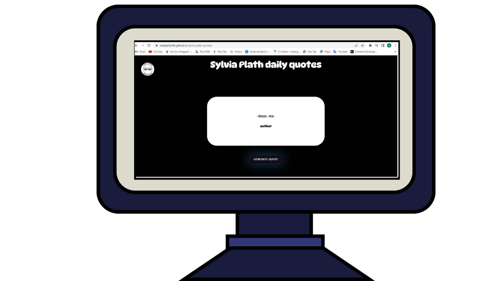

sylvia plath qoute generatoe
In this project our main focus is on objects, an object is
a collection of key-value pairs , where the key is a string and the value can be any data
type including other objects.objecets in js are dynamic.you can access properties
add properties delete properties using dot notation or bracket notation.
visit project: here
source code: here

filterable gallery
In this project we used an if statement inside of a for loop, a for
loop let's you execute a block of code repetedly, based on a specific condition or set of conditions
the syntax is like : for(initialization ; condition ; increment/decrement){
code to be executed (in this case an if statement)}. syntax of an if statement is
if(condition){//code to be executed goes here}
visit project: here
source code: here

rock paper scissors-last version
In this project we used .addEventListener() which is a method in javascript that adds an event handler
for a specific event on a target element.
the function is executed when the event is triggered on the element.what triggers it can be 'click',
'keydown','submit',and...we also used localStorage.setItem(),it is a method that allows you to store
data in browser's localstorage.it takes two arguments a key and a value, the key is the string that we use
to identify the data ,and the value can be any data type that can be serialized into a string.(because we
store the value as a JSON string*),to retrieved the data we can use localStorage.getItem().
.setInterval() allows you to run a block of code at a set time interval.we also have setTimeout() which
executes a function after a delay.
visit project: here
source code: here